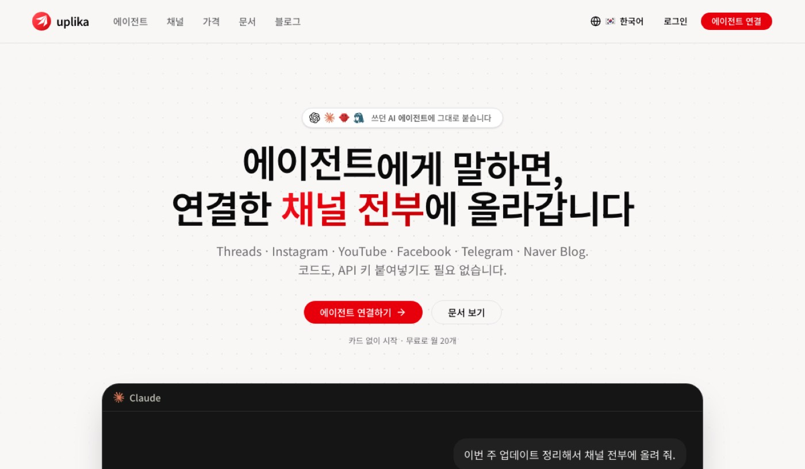
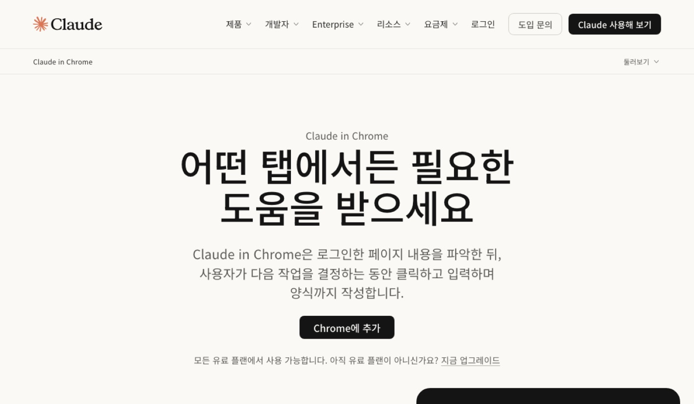
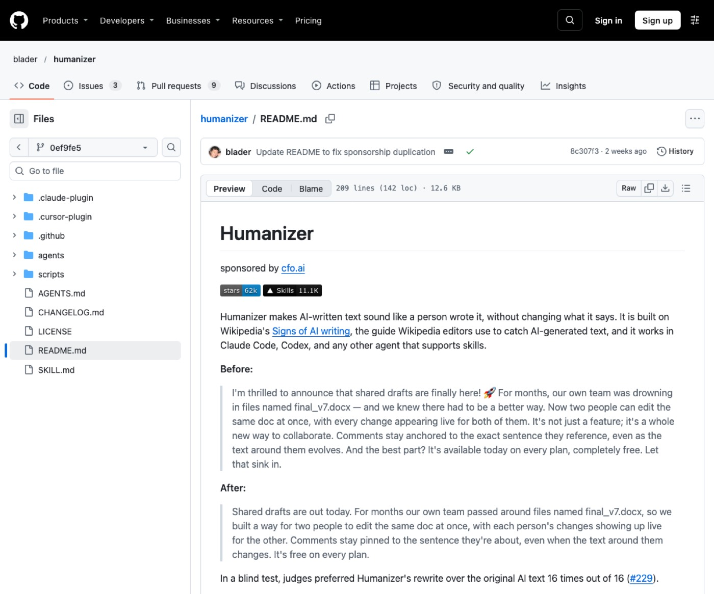
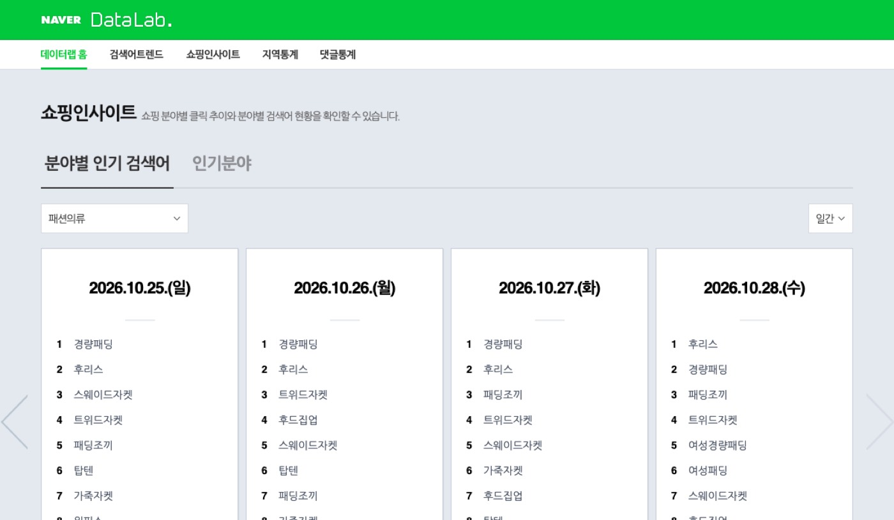
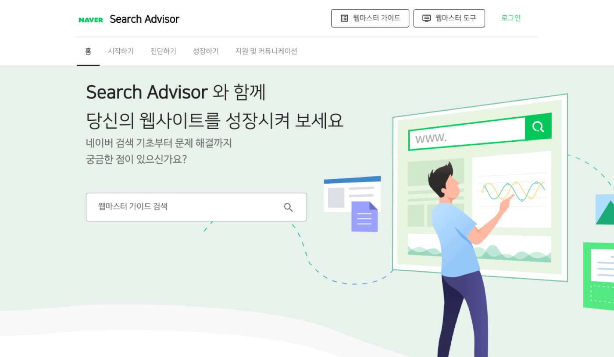

1. 시작 전 준비
- 네이버 블로그 계정으로 미리 로그인해 두세요.
- 업리카에 네이버 블로그 채널을 연결해 두세요.
- 사용할 AI 도구에 humanizer 스킬을 미리 추가하세요.
1단계2. 업리카
여러 채널에 블로그 글을 한 번에 자동 발행할 분이 써요.
AI 에이전트와 연동해 네이버 블로그에 글을 즉시 발행해요. 글자 수와 미디어 규칙을 사전에 검사해 실패를 막아요.

공식 사이트 — uplika.com 첫 화면
설치 없이 웹에서 써요 — uplika.com ↗
쓰는 순서
- 에이전트에 업리카 서버 주소를 연결하고 승인하세요.
- 발행할 본문과 이미지 첨부 여부를 프롬프트로 전달하세요.
- 네이버 블로그 발행 결과와 기록을 확인하세요.
바로 쓰는 요청문
[주제]에 대해 작성한 글을 네이버 블로그에 바로 발행해 주세요.
이 글을 네이버 블로그 글자 수 규칙에 맞는지 확인하고 올려 주세요.
업리카에 연결된 네이버 블로그 채널로 이번 주 소식을 발행해 주세요.
무료 플랜은 월 20건까지만 발행할 수 있어요.
2단계3. Claude in Chrome (클로드 인 크롬)
웹 화면에서 클릭과 글 입력을 AI에게 맡길 분이 써요.
열려 있는 웹페이지를 읽고 클릭이나 폼 입력을 대신해요. 백그라운드에서 작업을 처리해 수작업 시간을 아껴줘요.

공식 사이트 — claude.com/chrome 첫 화면
설치 없이 웹에서 써요 — claude.com/chrome ↗
쓰는 순서
- 크롬 웹스토어에서 확장 프로그램을 설치하세요.
- 작업할 블로그 관리자 화면이나 웹페이지를 열어 두세요.
- 측면 패널에서 원하는 작업 내용을 입력하고 실행하세요.
바로 쓰는 요청문
현재 열린 페이지의 내용을 요약해서 본문 입력창에 채워 주세요.
화면에 보이는 양식에 맞춰 [블로그 글감] 정보를 순서대로 입력해 주세요.
이 웹페이지에 작성된 글 초안을 검토하고 수정 항목을 짚어 주세요.
금융 거래나 비밀번호 관리 같은 민감한 작업에는 쓰지 마세요.
3단계4. humanizer (휴머나이저)
AI가 쓴 어색한 문장을 사람 글처럼 다듬고 싶은 분이 써요.
AI 글 특유의 진부한 표현과 상투적인 어조를 자연스럽게 고쳐요. 원문의 사실과 주장은 그대로 유지하면서 문체만 정돈해요.

공식 문서 — blader/humanizer README 첫 화면
설치 (공식 문서 원문 그대로)
/plugin marketplace add blader/humanizer
/plugin install humanizer@humanizer
쓰는 순서
- 지원하는 에이전트에 humanizer 플러그인이나 스킬을 설치하세요.
- /humanizer 명령어와 함께 다듬을 초안을 붙여 넣으세요.
- 본인 문체 샘플을 함께 넣어 어조를 맞춰 수정하세요.
바로 쓰는 요청문
/humanizer 이 블로그 초안에서 어색한 AI 표현을 다듬어 주세요: [초안]
제 평소 글투 샘플을 참고해서 이 글을 자연스럽게 고쳐 주세요: [글투 샘플] [초안]
과장된 문장을 빼고 사실 위주로 담백하게 다시 써 주세요: [초안]
AI 탐지기 우회가 목적이 아니며 탐지기에 걸릴 수 있어요.
4단계5. 네이버 데이터랩
인기 검색어와 쇼핑 트렌드를 확인해 글감을 찾을 분이 써요.
분야별 인기 검색어 순위와 클릭 추이를 제공해요. 주제어별 검색량 변화를 합산해 비교해 볼 수 있어요.

공식 사이트 — datalab.naver.com 첫 화면
설치 없이 웹에서 써요 — datalab.naver.com ↗
쓰는 순서
- 데이터랩 홈페이지에서 분야별 인기 검색어를 확인하세요.
- 검색어 트렌드 메뉴에서 비교할 주제어들을 입력하세요.
- 기간과 성별, 연령대를 설정하고 조회 결과를 살펴보세요.
바로 쓰는 요청문
네이버 데이터랩의 [패션의류] 인기 검색어를 바탕으로 블로그 글감 3개를 뽑아 주세요.
[주제어1]과 [주제어2]의 검색 트렌드 차이를 분석해 글 개요를 짜 주세요.
이번 주 급상승한 키워드를 골라 30대 타깃의 블로그 제목을 지어 주세요.
일부 데이터 조회 시 다른 서비스 API 오류가 뜰 수 있어요.
5단계6. 네이버 서치어드바이저 (서치어드바이저)
티스토리·워드프레스처럼 직접 운영하는 블로그나 사이트를 네이버 검색에 알릴 분이 써요.
웹사이트 검색 수집과 색인 반영 현황 리포트를 제공해요. 검색에 친화적인 사이트로 관리할 수 있도록 문제를 진단해요.

공식 사이트 — searchadvisor.naver.com 첫 화면
설치 없이 웹에서 써요 — searchadvisor.naver.com ↗
쓰는 순서
- 서치어드바이저에 로그인하고 웹마스터 도구로 이동하세요.
- 운영 중인 사이트를 등록하고 사이트 간단 체크를 실행하세요.
- 검색수집 리포트를 확인하고 문제점을 점검하세요.
바로 쓰는 요청문
네이버 서치어드바이저 웹마스터 가이드 기준에 맞춰 글 구조를 최적화해 주세요.
검색엔진이 이해하기 쉬운 블로그 소제목과 본문 배치를 추천해 주세요.
내 사이트 진단 결과에서 누락 위험을 줄이는 콘텐츠 작성법을 알려 주세요.
네이버 블로그(blog.naver.com)는 등록 대상이 아니에요. 네이버가 따로 등록 없이 수집해요.
7. 이어 쓰기 루틴
하나씩 따로 쓰기보다 이렇게 이어 쓰면 편해요.
| 글감 찾을 때 | 네이버 데이터랩에서 인기 검색어와 트렌드 추이를 조회해요. |
| 원고 작성할 때 | Claude in Chrome을 활용해 자료를 모으고 초안을 써요. |
| 문장 다듬을 때 | humanizer로 어색한 AI 표현을 지우고 사람 글로 고쳐요. |
| 글 발행할 때 | 업리카를 통해 네이버 블로그로 글을 자동 전송해요. |
| 발행 후 확인할 때 | 네이버 블로그는 따로 등록 없이 수집돼요. 외부 블로그는 서치어드바이저에서 수집 상태를 점검해요. |
8. 자주 묻는 질문
업리카 무료 이용 건수를 다 쓰면 어떻게 되나요?
무료 플랜은 월 20건까지 제공돼요. 더 많이 쓰려면 요금제 변경을 공식 문서에서 확인하세요.
Claude in Chrome은 무료 플랜에서도 쓸 수 있나요?
유료 플랜 이용자만 사용할 수 있어요. 무료 플랜 이용자는 플랜 업그레이드가 필요해요.
humanizer를 쓰면 AI 탐지기를 완벽히 피할 수 있나요?
AI 탐지기 통과를 목적으로 만든 도구가 아니에요. 탐지기에 여전히 감지될 수 있어요.
네이버 데이터랩 통계가 화면에 안 나올 땐 어떻게 하나요?
일시적인 API 호출 오류일 수 있어요. 잠시 기다렸다가 다시 조회해 보세요.
9. 공식 링크
이 자료가 도움이 됐다면
매주 새 도구를 영상으로 고르고, 따라 하는 법은 여기에 쌓아요.